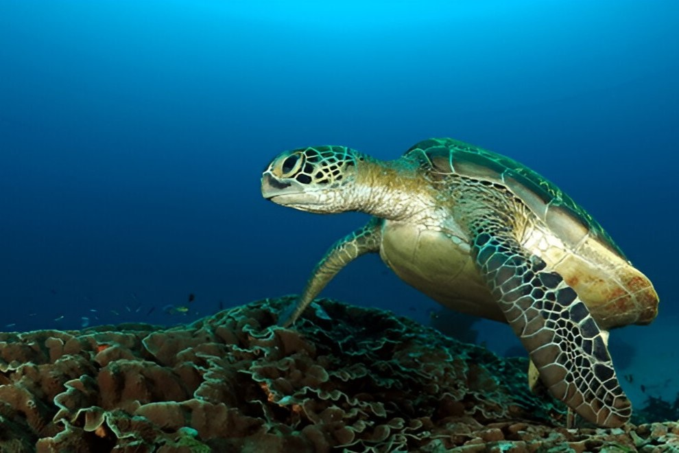

Siaba Island



Known for its lush landscapes, calm waters, and vibrant marine life. It’s a perfect spot for those who want to escape the more touristy areas and enjoy a peaceful, natural setting.
When you visit Siaba Island, there are plenty of things to do! The island is a fantastic destination for snorkeling with its crystal-clear waters and healthy coral reefs.
You can swim with colorful fish, sea turtles, and even spot some gentle manta rays if you're lucky. The calm waters around Siaba also make it a great place relax on the beach, soaking up the sun.